Business Process Analysis
Market Position and Updated Evidence
Supermicro held 9.5% of worldwide server revenue in the fourth quarter of calendar 2025, behind Dell at 10% and ahead of the other named vendors (Network World, 2026). The market position is strong but contested, and share is exposed to direct competition from Dell and from original design manufacturers.
Results published after the Week 1 analysis materially strengthen the case for the Reservation-Backed AI Factory. Preliminary first-quarter FY2027 net sales reached USD 19.9 billion, and FY2027 guidance rose to USD 72 billion to USD 82 billion (Super Micro Computer, Inc., 2026d). Management reported that large deployments frequently require deposits and milestone billing, that deferred revenue rose by about USD 3.1 billion during the quarter, and that the cash conversion cycle improved from 149 days to 97 days (The Motley Fool, 2026b). The disclosures indicate that Supermicro has begun moving toward the proposed commercial terms on an informal, deal-by-deal basis. The proposed model formalizes that movement and adds what the disclosures do not describe: verification before commitment, a site readiness gate, a capacity ledger, and a recurring service layer.
The same quarter also sharpens two risks. One customer represented 44% of first-quarter revenue, and days payables fell to 13, consuming roughly USD 3 billion of cash (The Motley Fool, 2026b). Customer diversification and supplier terms therefore remain central to the design. All Week 1 dollar targets are retained. Because guidance rose after the Week 1 model was built, the retained targets are now more conservative.
Event Simulation Design
The analysis applies discrete-event simulation, a method that represents a system as entities moving through queues, resources, and delays, with state changing only at discrete event times (Law, 2015). The model answers three questions that a static spreadsheet cannot answer: where queues form, how much delivery time the redesigned sequence saves, and how many staff the process requires.
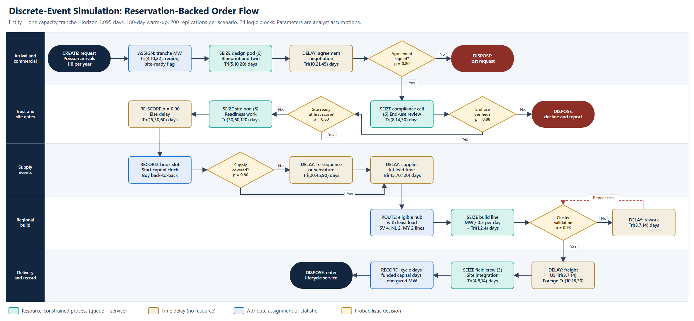
Logic of the Simulation
Each entity is one capacity tranche with a size drawn from a triangular distribution of 4, 10, and 22 MW. The flow operates as follows.
- Arrival and commercial stage. Requests arrive as a Poisson process at 110 tranches per year. Each request receives attributes for size, region, and first-score site readiness, then seizes a design pod for blueprint and digital twin work. A negotiation delay precedes a probabilistic signature decision (p = 0.80).
- Trust and site gates. A signed tranche queues for one of six compliance cells. End use is verified with probability 0.88; failure disposes the tranche with a decline and report. A tranche with an unready site, 40% of the flow, queues for one of eight site readiness pods and is then re-scored.
- Supply events. The capacity ledger books the slot and starts the capital clock. Uncovered supply (20% of tranches) incurs a re-sequencing delay, and a supplier kit lead time follows.
- Regional build. Least-load routing selects an eligible hub among Silicon Valley, the Netherlands, and Malaysia. Build time scales with tranche size, and failed validation (7%) triggers rework.
- Delivery and record. Freight precedes site integration by one of three field crews. The final record captures cycle time, funded capital days, and energized megawatts before the tranche enters lifecycle service.
The experiment runs 1,095 simulated days with a 180-day warm-up across 200 replications per scenario. The current process uses the same arrival stream under the Week 1 logic: document screening, forecast-based purchasing, a San Jose-weighted build, and a site check after manufacture. All parameters are analyst assumptions, documented in the Excel workbook, and results indicate direction and relative size rather than measured company performance.
Simulation Results
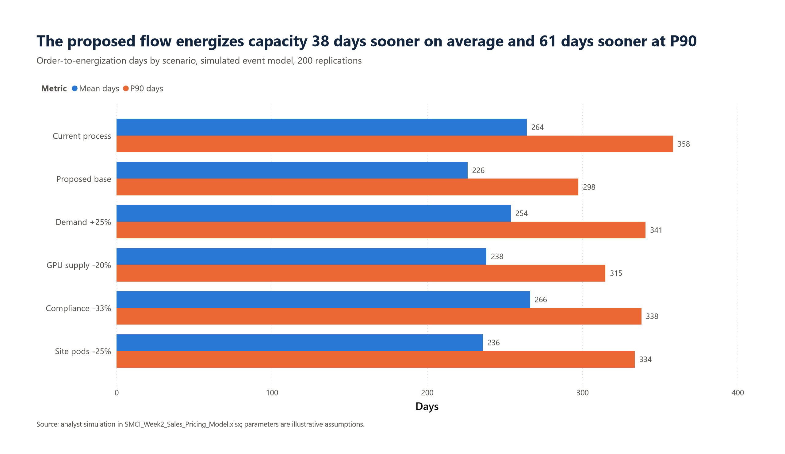
Analysis. Mean cycle time falls from 264 days to 226 days, a 38-day improvement (95% confidence interval half-width of about two days). The 90th percentile falls by 61 days, from 358 days to 298 days, which matters because delivery certainty is the attribute a reservation sells. Throughput is 703 MW per year compared with 720 MW under the current process. The 2.4% difference is the deliberate cost of a stricter end-use gate, which declines 10% of arrivals compared with 3%.
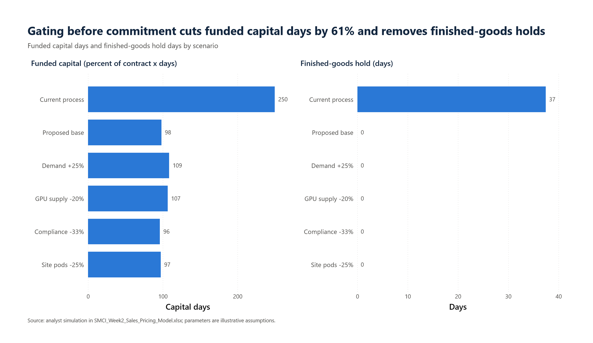
Analysis. Funded capital falls 61%, from 250 to 98 percent-of-contract days. Finished-goods hold falls from 37 days on average to zero, because a build slot is released only after the site qualifies. The result is robust across stress cases. The principal vulnerability is staffing: with compliance cells reduced by one-third, utilization exceeds 100%, the mean compliance wait reaches 46 days, and throughput falls to 638 MW per year.
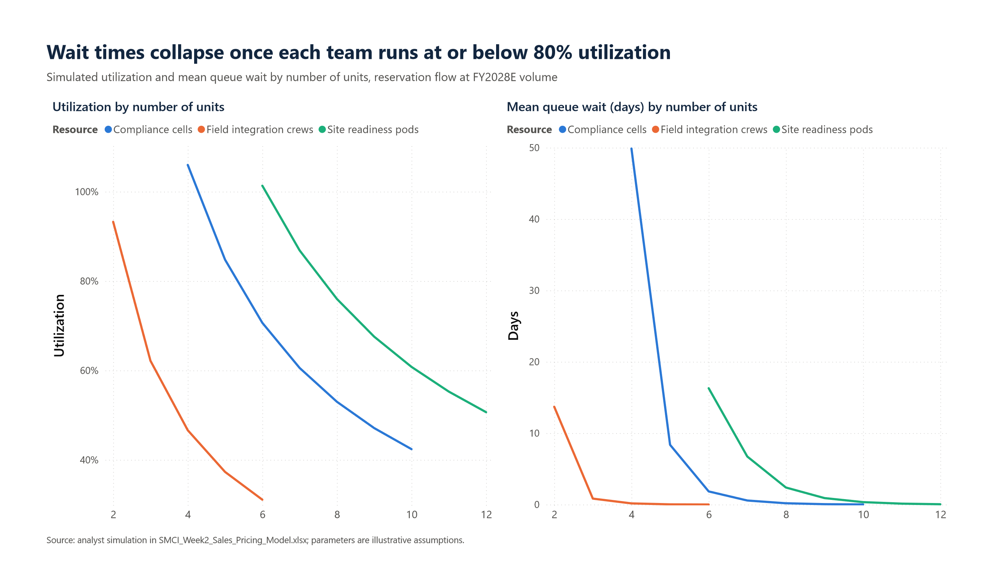
Analysis. Queue wait rises sharply above approximately 85% utilization. A staffing rule of utilization at or below 80% yields six compliance cells (71%), eight site readiness pods (76%), and three field crews (62%).
Securing the Workforce
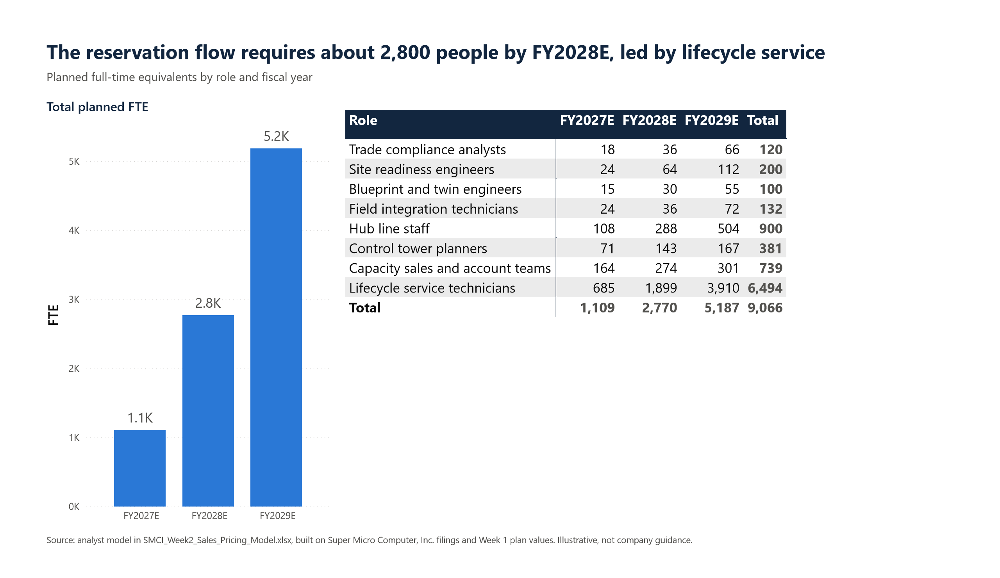
Analysis. The simulation-sized units scale with reserved revenue to approximately 1,100 full-time equivalents in FY2027E, 2,800 in FY2028E, and 5,200 in FY2029E. Lifecycle service technicians dominate the total, because the service layer is labor-intensive. Trade compliance requires only 18 positions in FY2027E for the reservation flow, at a cost of USD 4.3 million against the USD 45 million Week 1 budget. The remainder funds screening of purchase-order business, legal review, and telemetry operations.
The labor market is the binding consideration. More than half of data center operators reported difficulty finding qualified candidates in 2026 (Uptime Institute, 2026). Employment of electricians is projected to grow 9% and employment of heating, air conditioning, and refrigeration mechanics 11% from 2025 to 2035 (U.S. Bureau of Labor Statistics, n.d.-a, n.d.-b), so direct competition for skilled trades will intensify. The plan therefore converts electricians and HVAC mechanics into liquid-cooling technicians through a Supermicro-run certification program, recruits from military technical specialties, and positions technicians near the Silicon Valley, Netherlands, and Malaysia hubs and major customer campuses. Trade compliance analysts are recruited from export-control and sanctions practices.
Sales Strategy
The sales strategy replaces deal-by-deal hardware selling with four coordinated motions, each matched to a customer segment.
| Segment | Sales motion | Value proposition | Accounts |
|---|---|---|---|
| Hyperscale and large data center | Executive-led Strategic Capacity agreements | Dedicated hub lines and dual-source blueprints | 14 |
| Neocloud and AI lab | Direct capacity team with financing partners | Guaranteed slots tied to customer contract milestones | 34 |
| Sovereign and government AI | In-region partnerships through Netherlands and Malaysia hubs | Verified end use and in-region assembly | 22 |
| Enterprise AI factory | Channel-assisted standard blueprints in 5 MW units | Predictable delivery without an internal design team | 112 |
Three operating rules govern execution. First, sales compensation is paid on energized megawatts rather than bookings, so that incentives align with the verification and site gates. Second, end-use verification is independent of the sales organization, which directly addresses the alleged conduct described in Week 1. Third, no single account may exceed 35% of reserved revenue, a limit set in response to the 44% concentration reported for the first quarter of FY2027.
Sales Analysis
The analysis applies four algorithms, each answering a different question: historical trend, adoption rate, account priority, and probability of success.
Algorithm 1: Log-Linear Trend Regression
The regression fits ln(S) = a + b t to nine reported quarters of net sales by ordinary least squares.
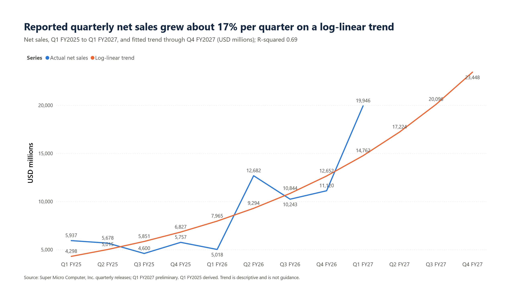
Analysis. The slope of 0.154 implies growth of 16.7% per quarter, with an R-squared of 0.69. Trend extrapolation places FY2027 net sales at USD 80.7 billion, within the USD 72 billion to USD 82 billion guidance. The 95% prediction interval for the second quarter of FY2027 spans USD 7.2 billion to USD 41.3 billion, which shows how lumpy deployment timing makes revenue and supports the case for a contracted demand signal.
Algorithm 2: Bass Diffusion of Reservation Adoption
The Bass (1969) model describes cumulative adoption as F(t) = m(1 − e^−(p+q)t) / (1 + (q/p)e^−(p+q)t), where p is the coefficient of innovation, q the coefficient of imitation, and m the market potential. The market potential is set at 75% of hardware revenue because channel business remains on purchase orders.
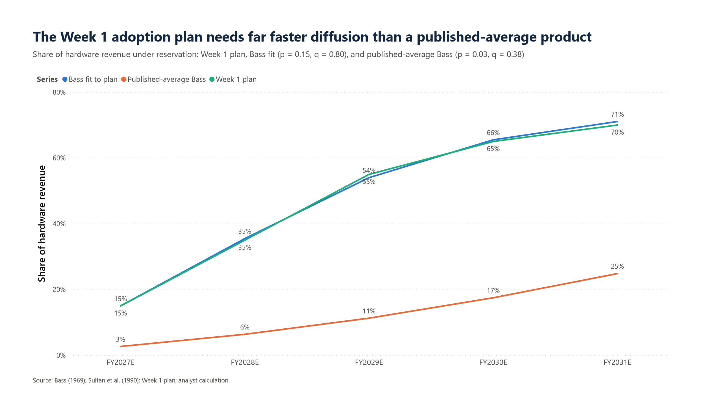
Analysis. A least-squares fit reproduces the Week 1 plan with p = 0.15 and q = 0.80. The fitted values far exceed the published averages of p = 0.03 and q = 0.38 (Sultan et al., 1990), under which adoption would reach only 25% by FY2031E rather than 70%. The plan is therefore ambitious by diffusion standards. Two factors support the faster path. Buyers are few and large, so a small number of decisions moves the share, and customer prepayments are already occurring at scale (The Motley Fool, 2026b).
Algorithm 3: Logistic Lead Scoring
Each account in a synthetic FY2028E book of 182 accounts receives a win probability P = 1 / (1 + e^−z), where z = segment intercept + 1.2(power secured) + 0.9(capital funded) + 0.7(prior relationship) − 1.4(export risk). The coefficients are analyst-calibrated, not statistically estimated, and the account book is illustrative.
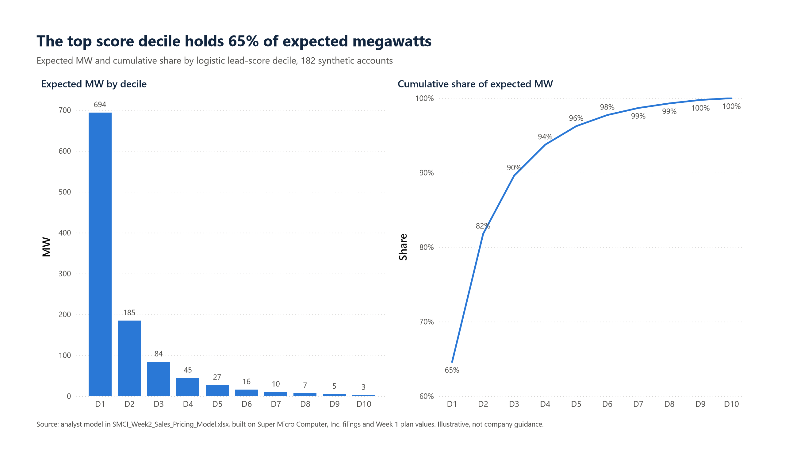
Analysis. The top decile of 19 accounts holds 65% of expected megawatts, and the top three deciles hold 90%. Senior sales capacity should therefore concentrate on approximately 55 accounts, with lower deciles served through channel partners and standard blueprints.
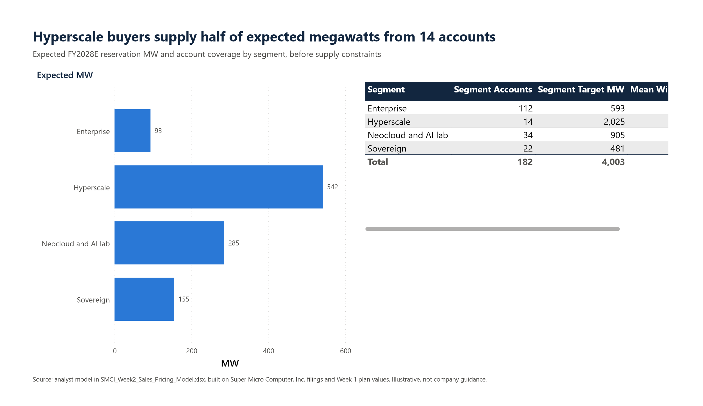
Analysis. Hyperscale buyers contribute 542 MW of the 1,075 MW expected before supply limits, from only 14 accounts. Neocloud and sovereign segments together contribute 440 MW and supply the diversification required by the 35% account limit.
Algorithm 4: Monte Carlo Probability of Success
The model simulates 20,000 trials of FY2028E reserved revenue:
R = Σ B_i × M_i × L_i × D × S × P × 39.31
where B_i is a Bernoulli win outcome from the logistic score with a shared market shock, M_i is target megawatts, L_i is lognormal deal scope, D is a lognormal demand shock, S is a Beta(18,3) share of supply delivered, and P is a realized price factor. Probability of success is the share of trials meeting each test: P̂ = (1/N) Σ 1[R ≥ T].
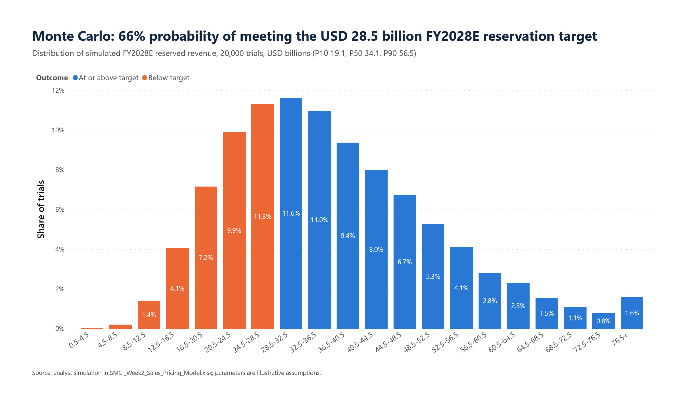
Analysis. Mean reserved revenue is USD 36.4 billion against a target of USD 28.5 billion, with a 10th percentile of USD 19.1 billion, a median of USD 34.1 billion, and a 90th percentile of USD 56.5 billion. An independent normal approximation built with live formulas in the Excel workbook yields a mean of USD 36.2 billion and a probability of 70%, compared with 66% by simulation. The difference reflects the right skew of the distribution.
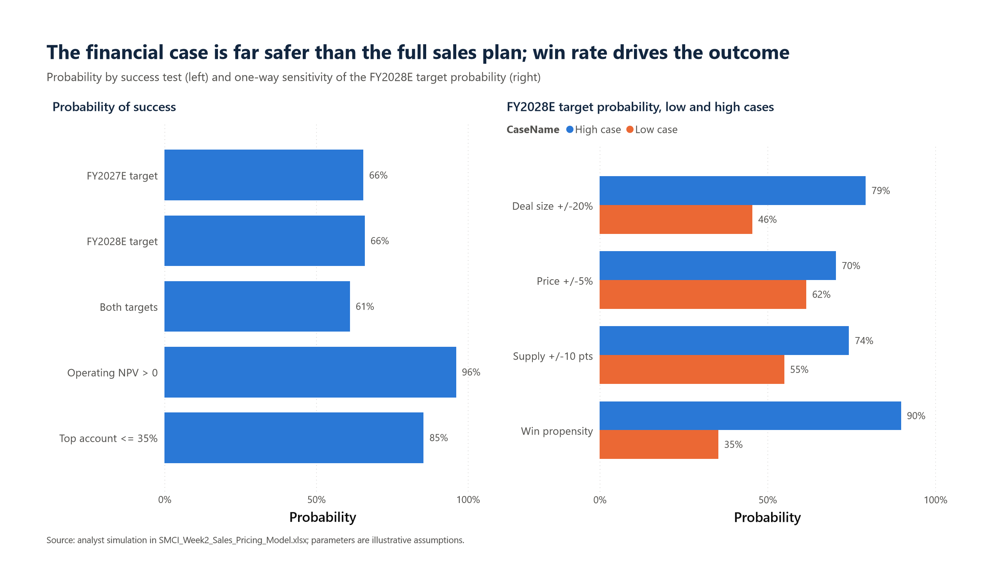
| Success test | Probability |
|---|---|
| FY2027E reservation target (USD 10.3 billion) | 66% |
| FY2028E reservation target (USD 28.5 billion) | 66% |
| Both targets | 61% |
| Week 1 operating NPV above zero | 96% |
| Largest account at or below 35% of reserved revenue | 85% |
Feasibility conclusion. The concept is feasible. The full sales plan carries a 61% to 66% probability of success, and the financial case carries a 96% probability, because the Week 1 model breaks even at approximately 39% of planned benefits. Win propensity is the most influential driver: a shift of 0.5 in the logit moves the FY2028E probability between 35% and 90%. Deal size follows (46% to 79%), then supply (55% to 74%) and price (62% to 70%). Sales execution therefore matters more than price level. The probabilities are conditional on the stated assumptions and are not forecasts of actual company results.